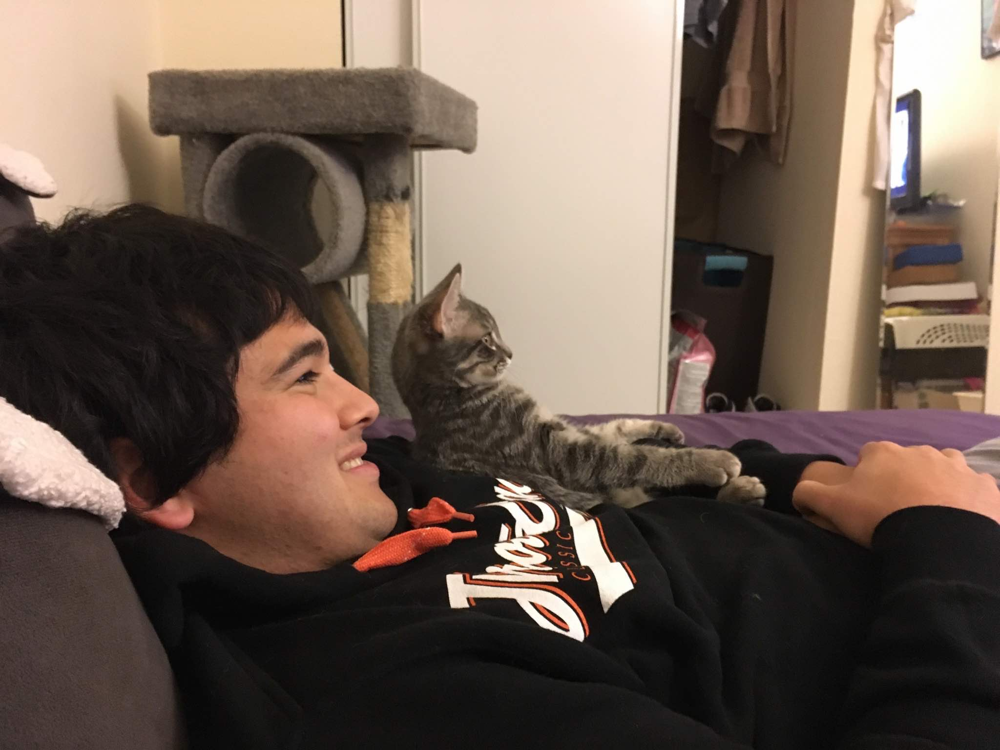
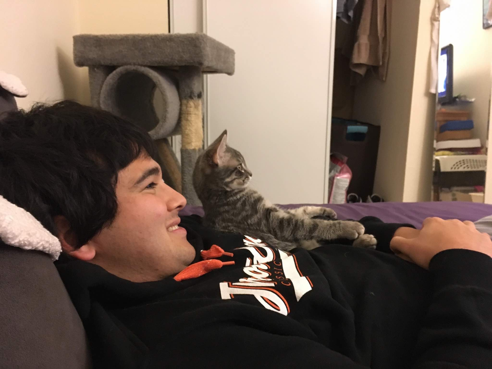

Recreational Interests
Bouldering | Simulation Baseball | Ranking Media | Recreational Sports | Cats
Bouldering
I have been bouldering since 2008 and enjoy climbing in a variety of areas both domestically and internationally. Here is a table of boulder problems I've done, my log of boulder problems I've tried and did not succeed on (at least not on that day), and finally a yearly breakdown of my climbing history.
You can see all the terrible pictures/videos I have take in the areas I've climbed at on my Google Drive:
California
Rest of the United States
International
Simulation Baseball
Since 2008 I have participated in a hyper-realistic, 30 team, DMB simulation league (NSBL). This hobby was really my first foray into the applicable world of data and statistics. I enjoy using these leagues for honing my technical skills and practicing decision theory via a data informed, systematic, process-oriented approach in management decisions that has generated very positive results. In recent years, I have tried to automate as much of my participation as possible via an array of python and shell scripts I have written. As of this point, my pitching staffs and lineups are set and optimized algorithmically my amateur draft board is determined mostly automatically, and my evaluation of my team in comparison to the other teams in the league is computed by a model.
Consuming, Rating, and Documenting Media
I consume a lot of media. A lot of it helps me learn or teaches me new things about the world. However much of it is simply for the sake of entertainment. One way I can justify this is by keeping strong documentation in the case I need to retrace my steps in the future.
A list and ranking of notable books I've read and remembered since 2013
A list and ranking of notable movies I've seen and remembered since my childhood
A list and ranking of podcasts I subscribe to
A list and ranking of TV shows that I've seen every episode of
A list of bookmarked sites and links from my internet browser
A list of quotes I have found funny, relevant, or inspiring.
Recreational Sports
Team sports have always been a big part of my life. I primarily played competitive baseball and soccer in my earlier years, but shifted to more recreational intramural sports in college, and have continued to play these sports recreationally after graduating.
Ultimate Frisbee
Soccer
Ice Hockey

Cats
I love most animals, but I feel most strongly about cats. My cats are always fun to be around and do a great job cheering me up if I am in a bad mood. Even though most of these cats are not mine, they all have had an impact on my life, and I keep all of their pictures/videos on my computer and Google Drive so I can look at them whenever I want.
 

Row 2: Frodo, Mowgli, Einstein, Luna.
Row 3: Piper, Polly/Paulie/Paul E, BamBam